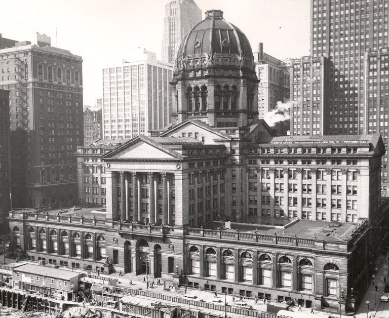
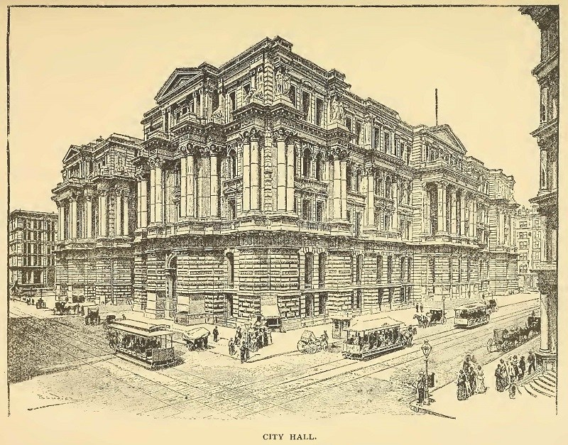

 Chicago is located in northeastern Illinois on the southwestern shores of Lake Michigan. The history of Chicago, Illinois, has played a predominant role in American economic, cultural and political history. Being one of the most dominant Midwest metropolises, the city has recorded history of French explorers, missionaries and fur trades. The name Chicago comes from a Miami Indian word for the wild leeks that grew on the bank of the short Chicago River. Despite a fire that destroyed the Central Business District, the city grew exponentially, becoming the dominant Midwestern center for manufacturing, commerce, finance, higher education and high culture.

During the late 19th century, the city became notorious worldwide for its rate of murders,
yet the courts failed to convict the killers. During the early 20th century, rates of
domestic murder tripled in Chicago.
Chicago, after New York City, became the center of the nation's advertising industry. The
city's politicians earned Chicago the nickname "Windy City" in the New York press. The city
adopted the nickname as its own. In 2016, Chicago was ranked the
sixth-most walkable large city in the United States. Many of the city's residential
streets have a wide patch of grass and trees between the street and the sidewalk itself.